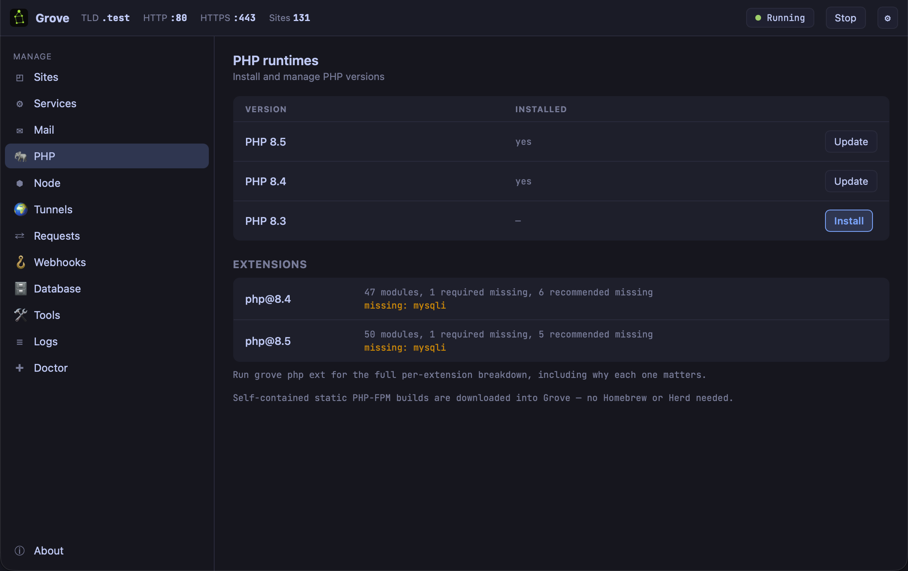

Chapter 5: PHP, Exactly the One You Need
The client project needs 8.1, the new one needs 8.5, and one of them needs an extension no prebuilt binary ships. This chapter is about having all of that at the same time, and about a screen that tells you what is missing before your code does.
The problem
PHP is usually global. One version on the machine, changed by a command that affects everything, so the moment you maintain two projects on different versions you are switching several times a day — and eventually running the wrong one without noticing, which produces errors that make no sense because they are answers to a question you did not ask.
Extensions make it worse. They are compiled against a
specific PHP, so every version change means rebuilding
them, and a missing one announces itself as
Call to undefined function in a stack trace
forty frames deep.
Versions, installed and pinned
grove php list
grove php install 8.3
grove use 8.3 # the machine default
These are self-contained static PHP-FPM builds downloaded into Grove. No Homebrew, no Herd, no compilation, and no shared library on your system that a later upgrade can pull out from under them.
The default is the machine's. The interesting command is the per-site one:
grove isolate legacy-client 8.1
Now legacy-client.test is served by 8.1 while
everything else stays on the default. Both run at the same
time; there is no switching, because there is nothing to
switch. Grove is the web server, so it knows which runtime
a request belongs to and routes to it — the thing
chapter 1 said one supervisor makes possible.
grove unisolate puts it back.
The extensions screen, and why it exists
Look at the panel again. Under each runtime:
php@8.4 47 modules, 1 required missing, 6 recommended missing
missing: mysqliThat line is worth more than it looks. The alternative — and the normal experience with every other PHP distribution — is finding out from a fatal error in a request, at which point you are debugging your application for a problem that is in your environment.
grove php extgives the full per-extension breakdown, and this is the part that makes it useful: it says why each one matters. Not a list of names to search for, but what depends on it. An extension you have never heard of and do not need reads as fine; one your framework assumes reads as a problem, in the same list.
When the extension is not in any build
Sooner or later you need something the prebuilt runtimes
do not carry — an older mysqli, an
imaging library, something from PECL that a client's
decade-old codebase depends on. Two answers, and it is
worth knowing both exist before you need them.
Variants. Grove's PHP builds come in
more than one flavour, selected with
--variant, so an extension missing from one
may simply be present in another. Try this first; it is a
download rather than a project.
Register your own. If you already have a PHP that does what you need — from Homebrew, from a client's Docker image, compiled yourself — tell Grove about it:
grove php register /opt/homebrew/opt/php@8.2/sbin/php-fpmGrove supervises it, routes to it and isolates sites to it exactly as it does its own. This is the escape hatch that keeps “bring your own runtime” from being a reason not to adopt the rest, and it is the same mechanism chapter 12 needs for step-debugging.
grove php ext now is an hour you do not spend
later reading a stack trace that was never about your code.
What you learned
- Self-contained static builds — no Homebrew, nothing on your system to break them later.
- grove use sets the machine default; grove isolate pins one site. Both versions run at once, so there is no switching.
- The extensions panel tells you what is missing before your code does, and
grove php extsays why each one matters. - Variants first, register second. A missing extension may be a different flavour of the same build.
- Any PHP-FPM can be registered and is then supervised, routed and isolated like Grove's own.